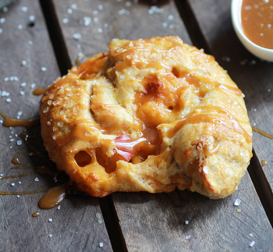

Caramelized Apple & Cheddar Soft Pretzels

A great snack for a fall day.
A recipe for soft homemade pretzels, stuffed with caramelized apples and cheddar cheese. These sweet and savory pretzels are paired with a sweet apple cider dipping sauce.
Ingredients
Whole wheat pretzels:
- 3/4 C warm water
- 1 Tbsp light brown sugar
- 1 1/2 tsp active dry yeast
- 1/4 C unsalted butter softened
- 3/4 tsp sea salt or kosher salt
- 2 1/4 C whole wheat pastry flour
- Canola oil to grease bowl
- 3 quarts water for boiling the pretzels
- 2/3 C baking soda for boiling the pretzels
- 1 large egg beaten, for brushing the pretzels before baking
-
Filling
- 1 Tbsp unsalted butter
- 2 large apples
- 1/2 Tbsp light brown sugar
- 1/4 tsp cinnamon
- 3/4 C sharp cheddar cheese shredded
Dipping sauce
- 1 C apple cider
- 2 Tbsp unsalted butter
- 1/2 C light brown sugar
- 1/3 C heavy cream
Steps
- To make the pretzel dough, combine the water, brown sugar and yeast in the bowl of a stand mizer and mix with the dough hook until combined. Let sit for 5 minutes.
- Add the melted butter, salt and whole wheat flour to the mixture and mix on low speed until combined. Increase the speed to medium and continue kneading until the dough is smooth and beins to pull away from the sides fo the bowl, about 3 to 4 minutes. If the dough appears too wet, add additional flour, 1 tablespoon at a time. Remove the dough from the bowl, place on a flat surface and knead into a ball with your hands.
- Coat a large bowl with canola oil, add the dough and turn to coat with the oil. Cover with a clean towel or plastic wrap and place in a warm spot until the dough doubles in size. This will take about 1 hour.
- About 10 minutes before you're ready to roll out the dough make the filling. Heat a large skillet over medium heat. Add the butter, chopped apples, brown sugar and pinch of cinnamon. Cook about 5 minutes or until the apples are soft and caramelized. Remove from the heat and let cool while you roll out the dough.
- Preheat the oven to 425°F. Bring a large pot of water to boil.
- Divide the pretzel dough into 4 equal balls and roll each out into a rectangle (about 11x3 inches). Spread about 1 1/2 tablespoons of cheddar cheese along the length of each piece and then sprinkle on the caramelized apples. Very lightly brush one of the long sides with a little egg wash. Then starting with the opposite side, roll the dough up into a log, enclosing the toppings inside. Pinch the seams together and then very gently roll the dough with your hands to form an even cylinder and fully enclose the filling.
- Take the two ends of each filled cylinder and form into a circle that is overlapped by a couple of inches of dough on either side, twist the ends and lay over the opposite side to form a pretzel shape and press to seal. Slowly add the baking soda to the boiling water. Boil the pretzels in the water solution, 2 at a time for 30 seconds, splashing the tips with the warmed water using a spoon. Remove with a large flat slotted spatula or a spider. Place 4 pretzels on each baking sheet, brush the tops with the egg wash and season liberally with sea salt. Bake for 15 to 18 minutes or until pretzels are golden brown.
- While the pretzels are baking make the sauce. Add the apple cider to a sauce pot and bring to a bowl. Simmer until the apple cider had reduced to about 1/4 cup, it should be syrupy. Add the butter, brown sugar and cream. Whisk until combined and simmer for about 5 minutes until the sauce has thickened and looks similar to caramel. Serve the pretzels.
- Remove pretzels from oven and let cool five minutes. Serve with the dipping sauce.
- Or if needed you can reheat the pretzels at 350°F for 15 minutes.